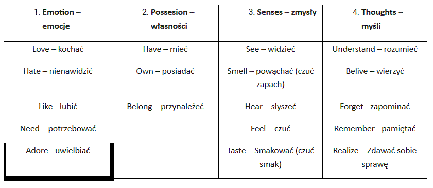

Nauczanie zdalne
Klasa 7Ca
wychowawca Bożena Lisowska
Piątek 24.04.2020r
usprawniania- załączniki wysłane do rodziców na prywatne emaile
GEOGRAFIA kl. 7
Temat: Podsumowanie wiadomości.
Przepisz do zeszytu i uzupełnij zdania właściwymi przykładami usług( wybierz po 1 przykładzie- turystyczne, pocztowe, transport):
1. Usługi:
a) Informacyjne to ...
b) Dystrybucyjne to ...
c) Rekreacyjno-zdrowotne to...
2. Przepisz do zeszytu poniższe nazwy miejscowości wraz z ich opisem:
A) Wieliczka
B) Malbork
C) Toruń
a) Średniowieczna budowla warowna
b) Zabytkowa kopalnia soli
c) Średniowieczny zespół miejski
3. Podkreśl co dominuje w polskim eksporcie:
jachty, sprzęt AGD, ropa naftowa, tablety
zadanie wyślij na adres : boz_lis@interia.pl
Obejrzyj krótki film z Kopalni Soli w Wieliczce
https://www.youtube.com/watch?v=m7a_-BW0Fkw&list=PLxBBt5wRZ_PPtchWAxDyda_p3zskf2JQj&index=5
zachęcam Was do obejrzenia wszystkich filmów na str:
https://www.kopalnia.pl/turysta-indywidualny/o-kopalni/zostan-w-domu-kopalnia-soli-wieliczka-zaprasza
GEOGRAFIA Alex
Temat: Dziedzictwo kulturowe i przyrodnicze Litwy i Białorusi. Cz. 2 quiz geograficzny.
Dziś mam dla Ciebie zabawę. Spróbuj zagrać w quiz o Litwie i Białorusi. Jeżeli czegoś nie będziesz wiedział to zaznaczysz dowolna odpowiedź. To pytanie, które zrobisz błędnie pojawi się jeszcze raz po ukończeniu zabawy. Powodzenia.
https://www.eduelo.pl/quizy/poziom-vi/geografia/sasiedzi-polski/dziedzictwo-kulturowe-litwy-i-bialorusi/
J.POLSKI kl.7
Temat :Niezwykły świat natury w wierszach B. Leśmiana "Tęcza"
Bolesław Leśmian ur. 22.01.1877r w Warszawie, zm 05.11.1937r - polski poeta i prozaik żydowskiego pochodzenia.
Zapisz temat lekcji, przepisz podaną zwrotkę i przeczytaj
Słychać go było, jak po młodym życie
Bieg coraz śpieszniej - ciepły deszcz majowy
Zbryzgany słońcem, co przez obłok płowy
Wzdłuż mu kropliste rozwidniało nicie.
Narysuj kolorową tęczę.
J.POLSKI Alex
Temat: Pisownia końcówek :ę, em, ą, om. "Żyję jak pies z kotem ".
Zapisz temat, przeczytaj podany tekst, przepisz go do zeszytu i podkreśl wyrazy z ę,ą
Wczoraj nasza klasa wybrała się na pieszą wędrówkę. Była piękna pogoda.
Z przyjemnością maszerowaliśmy leśną dróżką. Zbieraliśmy jagody i żołędzie.
Wieczorem urządziliśmy ognisko. Piekliśmy kiełbasę i graliśmy w piłkę.
J.ANGIELSKI
Emocje i uczucia wynikają często z sytuacji, w których się znajdujemy wyrażamy je za pomocą przymiotników, których nazwy dzisiaj poznamy.
Lesson
Topic: Feelings and emotions uczucia I emocje.
Dzisiaj zaczniemy od filmu:
https://www.youtube.com/watch?v=o5jZIswSfSE
Po obejrzeniu filmu zapoznaj się z listą słówek z filmu i przepisz ją do zeszytu.
Excited podekscytowany
Sad smutny
Shy nieśmiały
Thirsty spragniony
Angry zdenerwowany
Scared przestraszony
Happy wesoły
Bored znudzony
Worried zmartwiony/zatroskany
Hungry głodny
Sleepy śpiący
Tired zmęczony
Teraz, kiedy już znasz znaczenie wszystkich słówek, obejrzyj film jeszcze raz i postaraj się powtarzać słowa.
Uwaga rodzice! W przypadku problemów z przepisywaniem słówek (jest ich dwanaście) nie naciskamy na dzieci zbyt mocno przepiszą tyle ile dadzą radę. Jeżeli nie przepiszą wcale trudno. Proszę jednak w takim przypadku o obejrzenie filmu z wciskaniem pauzy przy słówkach i odczytanie dziecku tłumaczenia, aby chociaż w ten sposób dziecko zapoznało się z podanymi słowami.
MATEMATYKA Alex
Temat : Objętość graniastosłupa prostego.
Dokończ wzór na objętość graniastosłupa prostego
V = Pp x...
Zadanie 1
Oblicz objęstość prostopadłościanu o wymiarach a= 5 cm, b= 4cm, c=7cm.
Zadanie 2
Ile m3 drewna można ułożyć w magazynie o wymiarach a= 6 m, b= 8 m, c=7 m.
MATEMATYKA KL.7
Temat : Objętość graniastosłupa prostego.
Dokończ wzór na objętość graniastosłupa prostego
V = Pp x...
Zadanie 1
Oblicz objęstość prostopadłościanu o wymiarach a= 5 cm, b= 4cm, c=7cm.
Zadanie 2
Oblicz objęstość prostopadłościanu o wymiarach a= 5,5 cm, b= 4cm, c=7cm.
Zadanie 3
Oblicz objęstość prostopadłościanu o wymiarach a= 10 cm, b= 8cm, c=14cm.
Zadanie 4
Oblicz objęstość pudełka o długości krawędzi a= 50 mm, b= 40mm, c=70mm.
Zadanie
Ile m3 drewna można ułożyć w magazynie o wymiarach a= 6 m, b= 8 m, c=7 m.
ZAJĘCIA Z WYCHOWAWCĄ- konsultacje telefoniczne z rodzicami uczniów
PLASTYKA 7 C a
TEMAT : DRZEWO projekt muralu
/Sztuka współczesna sztuka ulicy mural /
MURAL to malowidło ścienne dużych rozmiarów umieszczane najczęściej na budynkach,
Obejrzyjcie krótki film:
https://www.youtube.com/watch?v=Bp8xbGyrKRs
Narysujcie własny projekt muralu który mógłby ozdobić jakiś budynek w mieście.
Tematem jest DRZEWO ale od Was zależy jak je zaprojektujecie może to być jesienne drzewo
z kolorowymi liśćmi albo drzewo na którym siedzą ptaki albo kwitnąca na wiosnę jabłonka
lub zupełnie inny pomysł. Do wykonania pracy będzie potrzebna : kartka papieru z bloku rysunkowego lub technicznego ołówek, kolorowe pisaki lub kredki.
Możecie zrobić zdjęcie pracy i wysłać na adres beata.chmiel@wp.pl do oceny.
PLASTYKA - KLASA 6 Ca /Alex/
TEMAT : WIOSENNE KWIATY
/kompozycja linearna z plamą barwną /
Do wykonania pracy będzie potrzebna : kartka papieru z bloku rysunkowego lub technicznego
ołówek, kredki lub pastele mogą być także farby plakatowe.
Obejrzyj krótkie filmy: przykład rysunkowy
https://www.youtube.com/watch?v=9oWaD12_qUU&t=120s
przykład malarski
https://www.youtube.com/watch?v=6jajZL2xc1c
wybierz jeden z nich i postaraj się narysować kwiat wg przykładu możesz tez narysować wiosenny kwiat wg własnego pomysłu i wyboru
Możesz zrobić zdjęcie pracy i wysłać na adres beata.chmiel@wp.pl do oceny.
MUZYKA Alex
Temat: Powtórzenie piosenki pt.,, Orkiestry dęte.
1. Przypomnienie tekstu i melodii piosenki.
https://www.youtube.com/watch?v=fcvqLRCQ2tA
ORKIESTRY DĘTE
Pa pa pa pa ra pa pa pa pa ra. . .
I zw.
Niby nic, a tak to się zaczęło,
Niby nic, zwyczajne "pa pa pa".
Jest w orkiestrach dętych jakaś siła,
Bo to było tak:
Babcia stała na balkonie, dołem dziadek defilował,
Ledwie go ujrzała, nieomal zemdlała: skrapiać trzeba było skronie.
Dziadek z miejsca zmylił nogę, pojął: czas rozpocząć dzieło!
Stanął pod balkonem, huknął jej puzonem, no i tak to się zaczęło
Pa pa pa pa ra pa pa pa pa ra. . .
II zw.
Niby nic, a tak to się zaczęło,
Niby nic, zwyczajne "pa pa pa".
Jest w orkiestrach dętych jakaś siła,
Bo znów było tak:
Mama stała na balkonie, dołem tatuś defilował,
Ledwie go ujrzała, nieomal zemdlała: skrapiać trzeba było skronie.
Dziadek z miejsca zmylił nogę, poczuł jak go coś natchnęło.
Stanął pod balkonem, huknął jej puzonem no i tak to się zaczęło.
Pa pa pa pa ra pa pa pa pa ra. . .
III zw
Niby nic, a tak to się zaczęło,
Niby nic, zwyczajne "pa pa pa".
Jest w orkiestrach dętych jakaś siła,
Lecz ich dzisiaj brak!
Próżno bowiem na balkonie, czekam by ktoś defilował,
żebym go ujrzała, nieomal zemdlała, by mi nacierano skronie...
Żeby z miejsca zmylił nogę, tak jak tamtym się zdarzyło,
Stanął pod balkonem, huknął mi puzonem, by mi także się spełniło.
Stanął pod balkonem, huknął mi puzonem, by mi także się spełniło.
2. Poćwicz śpiew I zwrotki i refrenu piosenki, posłuchaj II zwrotki piosenki .
3. Zapisz temat lekcji do zeszytu i II zwrotkę piosenki.
MUZYKA KL.7
Temat: Powtórzenie piosenki pt.,, Pod jabłonią.
1. Przypomnienie tekstu i melodii piosenki.
,,Pod jabłonią
https://www.youtube.com/watch?v=7z5bBk0b6X8
I zw.
Dobrze siedzieć pod jabłonią
w południowym słońcu,
dobrze patrzeć na motyle,
kwiaty fruwające,
chłonąć ciszę, przesyconą
nagrzanym powietrzem,
albo małe, błahe myśli
rozpinać na wietrze.
Dobrze chmurki ciepłych marzeń
jak gałąź naginać
i wypijać słodki zapach,
niczym kielich wina.
Ref.
Napełniam się w czas słoneczny,
w pogodę,
przeżyciami radosnymi,
jak miodem.
Zbieram promyk po promyku,
zbieram kroplę do kropelki,
na dni smutne,
na dni puste,
na wypadek wszelki.
II zw.
Jak w bezpiecznym, ciepłym ulu,
tak w sercu zamykam
smak przygody, uśmiech szczęścia,
co tak łatwo znika.
Cień kochania zapatrzony
w gwiezdne niebo pragnień
i beztroski urok lata,
zanim w jesień spadnie.
Zimą zejdę na dno serca
i zapachnie sadem,
pośród skarbów pozbieranych
Na wszelki wypadek.
Ref.
Napełniam się ...
2. Poćwicz śpiew I zwrotki i refrenu piosenki, posłuchaj II zwrotki piosenki.
3. Zapisz w zeszycie temat lekcji i refren piosenki. Jeżeli możesz to narysuj drzewo kwitnącej jabłoni
Czwartek 23.04.2020r
Usprawniania- zajęcia wysłane na prywatne emaile do rodziców
FIZYKA
Temat: Ciśnienie hydrostatyczne.
zapisz do zeszytu;
W otwartych zbiornikach wodnych panuje ciśnienie hydrostatyczne tym większe im większy jest słup wody i im większa jest gęstość cieczy. Związane jest to z działaniem siły ciężkości zarówno wody jak i powietrza (wartości te się sumują).
zad.1.
Zobacz doświadczenia
https://www.youtube.com/watch?v=EJRaVhpumrE&t=13s
Zapisz wzór z którego można obliczyć wartość ciśnienia hydrostatycznego oraz zapisz co oznaczają jego zmienne p, h ,g, d.
USPRAWNIANIA- zajęcia wysłane na prywatne emaile do rodziców
CHEMIA
Temat: Powtórzenie materiału.
1. Napisz wzór chemiczny wody.
2. Uzupełnij
Woda:
Stany skupienia - 1......................2..........................3..........................
Barwa-
Zapach-
Temperatura wrzenia-
3. Do dwóch garnków wlano tyle samo wody. Jeden postawiono w chłodnym miejscu, drugi podgrzewano na kuchence. W którym garnku szybciej wyparuje woda?
4. Jest temperatura + 6 stopni C. Spadł śnieg. Co się z nim stanie?
J.POLSKI Alex
Temat: Sensacje i komplikacje. Pisownia połączeń wyrazowych: en,em,on,om.
Zapisz temat i notatkę do zeszytu
Pisownia połączeń literowych:
- kiedy piszemy om,em?
- om przed p - pompa, kompot
- om przed b - bomba, klomb
- em przed p - temperatura, stempel
- em przed b - emblemat
- kiedy piszemy on, en ?
- on przed t - konto
- on przed d - konduktor
- en przed t - renta
- on przed k - konkurs
- on przed d - kalendarz
- przed spółgłoskami : f,w,s,z,sz,ch - komfort, konwój, konserwa, benzyna, pensja
J.POLSKI KL. 7
Temat: O tym, co w życiu jest ważne.
Zapisz do zeszytu temat i 5 wartości, które są najważniejsze w życiu:
1. Zdrowie
2. Miłość
3. Rodzina
4. Przyjaźń
5. Poczucie bezpieczeństwa
Napisz, co jest dla Ciebie najważniejsze w życiu.
INFORMATYKA KL.6
Temat: Programujemy w Scratch
Obejrzyj filmik
https://www.youtube.com/watch?v=clcG0vRRXEg
Postępuj zgodnie z instrukcjami. Miłej zabawy :-)
INFORMATYKA KL.7
Temat: Komórka, adres, formuła
Obejrzyj filmik
https://www.youtube.com/watch?v=6NBo0RoUYqg
Wykonaj zadanie do 3:22 minuty.
Wykonaj takie samo zadanie i wyślij mi na adres mailowy.
RELIGIA
Posłuchaj przypowieści:
https://www.youtube.com/watch?v=B7al1cPLMZs
Zapisz w zeszycie;
Temat :Bóg wybacza nam grzechy.
Bóg jest dla nas kochającym Ojcem, zawsze cieszy się kiedy do Niego wracamy.
Na koniec pomódl się i podziękuj Panu Bogu za swoich rodziców.
W-F/ USPRAWNIANIA- zajęcia wysłane na prywatne emaile do rodziców
W-F Temat: Ćwiczenia gimnastyczne w domu z przyborami.
Rozgrzewka
Pamiętaj że przed rozpoczęciem ćwiczeń musisz mieć wygodny strój sportowy. Jeśli jesteś już przygotowany możesz zacząć rozgrzewkę.
Oto propozycja rozgrzewki- kliknij link:
https://www.youtube.com/watch?v=vPchQOfveS8
Poćwicz w domu używając prostych przyrządów. Dziś wykorzystamy zwykły ręcznik. Zwiń ręcznik w rurkę i połóż go na podłodze. Obejrzyj film w linku i spróbuj poćwiczyć jak jego autor.
https://www.youtube.com/watch?v=HriJ5zXHDJ4
Teraz pora na wiosenne porządki w twoim domu. Znajdź dwie szmatki z froty. Obejrzyj filmik w linku i spróbuj wykonać ćwiczenia w nim zawarte.
https://www.youtube.com/watch?v=FcZ-3VrLKnY
Powodzenia.
Środa 22.04.2020r
HISTORIA
TEMAT: Skutki cywilizacyjne i kulturowe wielkiej wojny
Oglądnij krótki film:
https://www.youtube.com/watch?v=aeNVCHKfNVs
I wojna była konfliktem, który pozostawił po sobie szereg poważnych konsekwencji, zarówno społecznych, jak i gospodarczych oraz ekonomicznych. Skutkiem działań wojennych było zmniejszenie się liczby mieszkańców Europy. Podczas wojny poległo blisko 9 mln ludzi.
TECHNIKA KL.6
Zadanie 1. Przepisz temat lekcji do zeszytu
Temat: Nowoczesny świat techniki
Zadanie 2.
Obejrzyj film. Zobaczysz na nim
zastosowanie nowoczesnych urządzeń i robotów.
https://www.youtube.com/watch?v=NzR9_Q1oSjo
Zadanie 3.
Narysuj w zeszycie swojego własnego robota, którego chciał byś zrobić.
Zadanie4
W przyszłym tygodniu wykonamy własnego robota z dostępnych w domu materiałów.
Przygotuj odpowiednie materiały i narzędzia: różnej wielkości pudełeczka, opakowania po słodyczach, kolorowy papier sznureczki, folię aluminiową, nożyczki , klej i inne materiały, które będziesz mógł wykorzystać do zrobienia swojego robota.
TECHNIKA KL. 7
Tak jak się umawialiśmy w poniedziałek dzisiaj zrobimy pojemnik na kredki. Mam nadzieję, że udało Ci się przygotować wszystkie potrzebne materiały.
Zadanie 1. Przepisz temat lekcji i punkty.
Temat: Pojemnik na kredki z metalowej puszki (LEKCJA 2)
I. Materiały i narzędzia:
Puszka o gładkich brzegach, klej, nożyczki, ołówek, linijka, materiały do ozdabiani: np. serwetka, bibułka, kolorowy papier, wstążki, tasiemki i inne.
II. Plan pracy
1. Przygotowanie materiałów i narzędzi
2. Posmarowanie puszki klejem i przyklejenie serwetki lub kolorowego papieru
3. Ozdobienie pojemnika elementami ozdobnymi
4. Prace wykończeniowe
Zadanie 2. Obejrzyj film jeszcze raz. Przypomnisz sobie jak ozdobić puszkę.
https://www.youtube.com/watch?v=PQHBpSXjlc0
Zadanie 3. Zrób swój własny pojemnik na kredki. Pamiętaj o zachowaniu bezpieczeństwa podczas posługiwania się ostrymi narzędziami i przedmiotami.
Zdjęcie swojej pracy prześlij na mój adres e mail.
MATEMATYKA kl.6 Alex
Temat : Objętość graniastosłupa prostego. Jednostki objętości.
Obejrzyj na youtube lekcję matematyki dotyczącą objętości granoastosłupów.
https://www.youtube.com/watch?v=i06eA4UnfoA
Zapisz w zeszycie
Graniastosłup prawidłowy to graniastosłup prosty, którego podstawą jest wielokąt foremny. Objętość graniastosłupa liczymy ze wzoru V=Pp*H, gdzie Pp to pole podstawy, a H to wysokość. Pole całkowite liczymy ze wzoru Pc=2*Pp+Pb, gdzie Pp to pole powierzchni bocznej, czyli suma pól wszystkich ścian bocznych.
Jednostką objętości są : mm3 cm3, dm3, m3
.
Zamiana jednostek sześciennych.
Przykład 1
Zamiana jednostek sześciennych.
Zamianę jednostek sześciennych zaczynasz od równania
1 m=100 cm
1dm = 10cm
1cm = 10mm
Zamień 1 m3 na cm3.To łatwe.
Następnie obie strony tego równania podnosisz do potęgi 3. Możesz zastosować kalkulator.
100 x 100 x 100 = otrzymując, że 1m3=1000 000 cm3.
Dalej już możesz wpisać wynik, bo już wiesz, ile jest centymetrów sześciennych w metrze sześciennym.
Zadanie 1 Zamień:
2 m3 na cm3=
3 m3 na cm3 =
Zadanie 2 Zamień:
4 dm3 na cm3=
5 dm3 na cm3=
Zadanie 3 Zamień:
3 cm3 na mm3 =
4 cm3 na mm3=
Przykład 2
Oblicz objętość graniastosłupa, który w podstawie ma kwadrat o boku 4 cm, a jego wysokość wynosi 7 cm.
Najpierw musimy obliczyć pole podstawy graniastosłupa. W naszym przypadku mamy w podstawie kwadrat o boku długości 4 cm, czyli jego pole obliczamy jako
Pp= a2= a x a = 4 x 4 = 16cm2
Teraz już możemy skorzystać ze wzoru na objętość graniastosłupa:
V = Pp x H = 16cm2 x 7 cm = 112 cm3
Odp: Objętość graniastosłupa wynosi 112 cm3 .
MATEMATYKA KL. 7
Temat : Objętość graniastosłupa prostego. Jednostki objętości.
Obejrzyj na youtube lekcję matematyki dotyczącą objętości granoastosłupów.
https://www.youtube.com/watch?v=i06eA4UnfoA
Zapisz w zeszycie
Graniastosłup prawidłowy to graniastosłup prosty, którego podstawą jest wielokąt foremny. Objętość graniastosłupa liczymy ze wzoru V=Pp*H, gdzie Pp to pole podstawy, a H to wysokość. Pole całkowite liczymy ze wzoru Pc=2*Pp+Pb, gdzie Pp to pole powierzchni bocznej, czyli suma pól wszystkich ścian bocznych.
Jednostką objętości są : mm3 cm3, dm3, m3
.
Zamiana jednostek sześciennych.
Przykład 1
Zamiana jednostek sześciennych.
Zamianę jednostek sześciennych zaczynasz od równania
1 m=100 cm
1dm = 10cm
1cm = 10mm
Zamień 1 m3 na cm3. To łatwe.
Następnie obie strony tego równania podnosisz do potęgi 3
100 x 100 x 100 = otrzymując, że 1m3=1000 000 cm3.
Dalej już możesz wpisać wynik, bo już wiesz, ile jest centymetrów sześciennych w metrze sześciennym.
Zadanie 1 Zamień:
2 m3 na cm3=
3 m3 na cm3 =
4 m3 na cm3=
5 m3 na cm3=
Zadanie 2 Zamień:
2 dm3 na cm3=
3 dm3 na cm3 =
4 dm3 na cm3=
5 dm3 na cm3=
Zadanie 3 Zamień:
2 cm3 na mm3=
3 cm3 na mm3 =
4 cm3 na mm3=
5 cm3 na mm3=
Przykład 2
Oblicz objętość graniastosłupa, który w podstawie ma kwadrat o boku 4 cm, a jego wysokość wynosi 7 cm.
Najpierw musimy obliczyć pole podstawy graniastosłupa. W naszym przypadku mamy w podstawie kwadrat o boku długości 4 cm, czyli jego pole obliczamy jako
Pp= a2= a x a = 4 x 4 = 16cm2
Teraz już możemy skorzystać ze wzoru na objętość graniastosłupa:
V = Pp x H = 16cm2 x 7 cm = 112 cm3
Odp: Objętość graniastosłupa wynosi 112 cm3 .
FIZYKA
Temat: Prawo Pascala
zapisz do zeszytu:
Prawo Pascala mówi, że jeśli na zamkniętą w zbiorniku ciecz (lub gaz) działamy siłą to wytworzone w ten sposób ciśnienie działa jednakowo we wszystkich kierunkach i w całej objętości tej cieczy (gazu).
Wartość ciśnienia- siły parcia F na ściankę o powierzchni S obliczamy ze wzoru
F = p·S p to ciśnienie jakie panuje w zbiorniku
Przyczyną występowania ciśnienia atmosferycznego (powietrza) i hydrostatycznego (wody) jest naciskanie warstw powietrza lub cieczy na warstwy znajdujące się poniżej.
Obejrzyj film :
https://www.youtube.com/watch?v=kBK-V3NTOn8&t=542s
Zad. Odpowiedz gdzie znalazło zastosowanie prawo Pascala?
J.POLSKI Alex
Temat: Pomiędzy nocą a dniem, pomiędzy jawą a snem J.Harasymowicz "W marcu nad ranem"
Przeczytaj fragment wiersza
Najlepiej jest budzić się w marcu nad ranem
Kiedy cieniutkie czarne widełki sadu przez wiatr wygięte
Gdy w niedalekim lasku śnieżyczki w najbielszych szatach
Czekają na wschód słońca by na tle czerwieni zmartwychwstać jak święte.
Zapisz temat lekcji i krótką notatkę do zeszytu
Obraz poetycki to świat przedstawiony, opisany za pomocą poezji.
W tworzeniu tego obrazu ważne są środki stylistyczne takie jak: metafora, epitet i porównanie.
J.POLSKI KL. 7
Temat: Moje marzenia. Tworzenie tekstu.
Przeczytaj fragment wiersza:
Marzenia są fikcją, a życie trwa dalej
Więc myśl o przyszłości i długo nie szalej,
Postępuj mądrze i decyduj z rozwagą
A wejdziesz w dorosłość z należytą powagą.
Zapisz temat lekcji i przepisz podany tekst
Marzenia są czymś wspaniałym, ale nie można nimi żyć.
Życie jest prawdziwe, a one są fikcją. Każdemu wolno marzyć.
W domu
:Moje największe marzenie"
Moim największym marzeniem jest............................................................................................
BIOLOGIA KL. 6
Temat: Gady chronione w Polsce.
Wszystkie gady żyjące w Polsce są pod ochroną.
https://www.youtube.com/watch?v=pZ6qXyjR67I
zad. Proszę o wypisanie 5 nazw gadów żyjących w Polsce z prezentacji
BIOLOGIA KL 7
Temat : Ucho narząd słuchu i równowagi.
1. Obejrzyj filmik:
https://www.youtube.com/watch?v=g0mv5C_--lo
https://www.youtube.com/watch?v=pooeW9Oop5Q
W zeszycie wykonaj tylko zadanie nr.1.
Zad 1. Wykreśl kolorowe wyrazy tak , aby powstały zdania prawdziwe
Receptory słuchu znajdują się na błonie bębenkowej / w ślimaku.
RELIGIA
Piosenka do posłuchania;
https://www.youtube.com/watch?v=tna78xPzDxU
Wpis do zeszytu:
Temat : Niedziela Bożego Miłosierdzia.
W pierwsza niedzie
lę po Zmartwychwstaniu szczególnie czcimy Boże Miłosierdzie.
Każdy kto tego dnia będzie wyspowiadany i przyjmie Komunie św. uzyska odpuszczenie kar i win.
Wykonaj kartę pracy nr 2.-wysłane na emaile przez wychowawcę
WDŻ KLASA VI Alex
Temat: Zarządzanie sobą
Obejrzyj film :
https://www.youtube.com/watch?v=-NvoY-TKpn4
Notatka:
Do zarządzania sobą należą:
- dobry plan obowiązków
- higieniczny tryb życia
- higiena osobista
- regularny sen
- stosowny ubiór
- zdrowa dieta
- aktywność fizyczna
KLASA VII (Paweł, Patryk)
Temat: Pierwsze uczucia - empatia.
Obejrzyj film:
https://www.youtube.com/watch?v=ehGoKhqeyBY
Notatka:
Słowem od którego warto zacząć budowanie relacji z dziewczyną, chłopakiem, innymi ludźmi czy też z naszymi pupilami jest empatia.
Czyli wczuwanie się w stan wewnętrzny drugiej osoby.
Wtorek 21.04.2020r
HISTORIA
TEMAT: Konferencja pokojowa w Paryżu.
Konferencja pokojowa była zorganizowana w Paryżu po zakończeniu I wojny światowej. Trwała od 1919 do 1920 roku. Brało w niej udział 27 zwycięskich państw.
Oglądnij krótki film:
https://www.youtube.com/watch?v=nmZoPVvGENc
MATEMATYKA Alex
Temat : Pole powierzchni graniastosłupa prostego.
Zadanie tekstowe związane z obliczaniem pól powierzchni graniastosłupów prostych.
Zadanie 1
Dokończ wzór na pole graniastosłupa prostego. Podaj jego nazwę.
Pp=6x...................
To jest wzór na pole powierzchni...................
Pp= 2x(...................
To jest wzór na pole powierzchni...................
Zadanie 2
Pokój ma kształt prostopadłościanu o długości 4m, szerokości 3 m i wysokości 2,5m. Ile metrów kwadratowych ścian i sufitu trzeba pomalować?
( narysuj siatkę bryły , to pomoże Ci rozwiązać zadanie)
Zadanie 4
Pokój ma długość 3m, a szerokość 3m. Ile m2 potrzeba wykładziny dywanowej na porycie całej powierzchni podłogi.
( narysuj siatkę bryły , to pomoże Ci rozwiązać zadanie)
Praca domowa Zadanie 5
Uzupełnij luki w zadaniach.
Sześcian ma............. ścian. Każda ze ścian ma kształt............. W sześcianie jest.............krawędzi i.............wierzchołków. Z każdego wierzchołka wychodzą .............krawędzie. Bryła, której w zadaniu podana jest długość jednej krawędzi nazywa się..............Kostka do gry planszowej najczęściej ma kształt.
MATEMATYKA Paweł, Patryk
Temat : Pole powierzchni graniastosłupa prostego.
Zadanie tekstowe związane z obliczaniem pól powierzchni graniastosłupów prostych.
Zadanie 1 Dokończ wzór na pole graniastosłupa prostego. Podaj jego nazwę.
Pp=6x.............
To jest wzór na pole powierzchni.............
Pp= 2x(.............
To jest wzór na pole powierzchni.............
Zadanie 2
Ile cm2 blachy trzeba kupić na zrobienie modelu prostopadłościanu o długości krawędzi a= 4cm, b= 5cm, c= 3cm?
Zadanie 3
Pokój ma kształt prostopadłościanu o długości 4m, szerokości 3 m i wysokości 2,5m. Ile metrów kwadratowych ścian i sufitu trzeba pomalować?
( narysuj siatkę bryły , to pomoże Ci rozwiązać zadanie)
Zadanie 4
Pokój ma długość 3m, a szerokość 3m. Ile m2 potrzeba wykładziny dywanowej na porycie całej powierzchni podłogi.
Zadanie 5
Ile zapłacisz za wykładzinę dywanową z zadania 4 jeżeli 1m2 wykładziny dywanowej kosztuje 24,50zł?
Zadanie 6
Łazienka ma długość 2m, a szerokość 3,5m. Ile m2 kafli trzeba kupić na całą powierzchnię podłogi.
Zadanie 7
Ile zapłacisz za kafelki do łazienki z zadania 6 jeżeli 1m2 kafli kosztuje 28,50zł?
J.POLSKI Alex
( temat z poniedziałku)
J.POLSKI Paweł, Patryk
Temat: Bracia, siostry i kuzynki czyli o rodzinie wyrazów.
Zapisz do zeszytu temat i przepisz notatkę
Rodzina wyrazów - grupa wyrazów zawierających ten sam rdzeń, czyli wywodzący się od jednego wyrazu podstawowego.
Przykładowe rodziny wyrazów:
- dom - domek, domowy, domownik
- lód - lodowy, lodówka, lody
- brat - bratanek, bratowa, bratanica
- cukier - cukrowy, cukierek, cukiernica
Przeczytaj zapisane wyrazy
CHEMIA
Temat: Stężenie procentowe roztworu
Dzisiaj poćwiczymy jeszcze raz obliczenia.
Obejrzyj filmik
https://www.youtube.com/watch?v=x_b5kl0l6Xs
i korzystając z jednego z 3 sposobów oblicz: Ile substancji znajduje się w 50 g, 5 % roztworu?
JĘZYK ANGIELSKI
Emocje i uczucia wynikają często z sytuacji, w których się znajdujemy wyrażamy je za pomocą przymiotników, których nazwy dzisiaj poznamy.
Topic: Feelings and emotions uczucia I emocje.
Dzisiaj zaczniemy od filmu:
https://www.youtube.com/watch?v=o5jZIswSfSE
Po obejrzeniu filmu zapoznaj się z listą słówek z filmu i przepisz ją do zeszytu.
Excited podekscytowany
Sad smutny
Shy nieśmiały
Thirsty spragniony
Angry zdenerwowany
Scared przestraszony
Happy wesoły
Bored znudzony
Worried zmartwiony/zatroskany
Hungry głodny
Sleepy śpiący
Tired zmęczony
Teraz, kiedy już znasz znaczenie wszystkich słówek, obejrzyj film jeszcze raz i postaraj się powtarzać słowa.
Uwaga rodzice! W przypadku problemów z przepisywaniem słówek (jest ich dwanaście) nie naciskamy na dzieci zbyt mocno przepiszą tyle ile dadzą radę. Jeżeli nie przepiszą wcale trudno. Proszę jednak w takim przypadku o obejrzenie filmu z wciskaniem pauzy przy słówkach i odczytanie dziecku tłumaczenia, aby chociaż w ten sposób dziecko zapoznało się z podanymi słowami.
BIOLOGIA Paweł, Patryk
Podręcznik z biologii Puls Życia kl. 7 dostępny na stronie -
https://www.nowaera.pl/naukazdalna
Temat : Oko narząd wzroku (str. 195)
1. Przeczytaj : Aparat ochronny (195 str. ) ,
2. Obejrzyj filmik:
https://www.youtube.com/watch?v=KIkHk__96Hg
3. Zapoznaj się ze schematem budowa oka ( 196 str.)
W zeszycie wykonaj tylko zadanie nr.1.
Zad 1.Wypisz najważniejsze elementy aparatu ochronnego oka.
BIOLOGIA kl. VI Alex
Podręcznik z biologii Puls Życia kl. 6 dostępny na stronie -
https://www.nowaera.pl/naukazdalna
Temat: Gady - kręgowce, które opanowały ląd.
Podręcznik str. 103-
https://www.youtube.com/watch?v=EZ8LC4EjG80
Notatka : Gady to zmiennocieplne kręgowce , które żyją na ladzie. Ich skóra jest pokryta łuskami lub tarczkami chroniącymi przed wyschnięciem.
USPRAWNIANIA TUS/ plastyczne- załączniki wysłane na prywatne emaile do rodziców
USPRAWNIANIA j.polski/ SI wysłane na prywatne emaile do rodziców
Usprawniające informatyka Paweł
Temat: Programujemy w języku Scratch Pływająca rybka.
1. Wejdź na stronę:
https://www.youtube.com/watch?v=MuX9BNjJvJY
2. Obejrzyj film.
3. Wykonaj ćwiczenia zaprezentowane na filmie.
Aby to zrobić wejdź na stronę:
https://scratch.mit.edu/
lub pobierz program
Scratch offline (wersja 3.0, do pobrania bezpłatnie)
https://scratch.mit.edu/download/ lub
Scratch offline (wersja 2.0, do pobrania bezpłatnie)
https://scratch.mit.edu/download/scratch2
Miłej zabawy.
Poniedziałek 20.04.2020r
1.TUS załącznik wysłany na prywatne emaile do rodziców
2. J. angielski
Na ostatniej lekcji dowiedzieliśmy się, że czasowniki możemy podzielić na statyczne i dynamiczne. Poznaliśmy już czasowniki dynamiczne, dzisiaj skupimy się więc na czasownikach statycznych.
Lesson
Topic: State Verbs czasowniki statyczne.
Czasowniki statyczne wyrażają stany, uczucia, emocje. Czasowniki należące do tej grupy nie posiadają formy ciągłej (oprócz kilku wyjątków), a co za tym idzie nie występują w czasach Continuous.
Czasowniki statyczne możemy podzielić na cztery grupy:

Aby posłuchać wymowy słówek z tabeli spójrzcie na film od dwudziestej piątej do pięćdziesiątej piątej sekundy (0:25 0:55):
https://www.youtube.com/watch?v=8m6LvVQ-DQ4
UWAGA RODZICE: Forma zapisu nie musi być tabelą można zapisać w kolumnach, jedno pod drugim. Jeżeli uczeń nie będzie w stanie przepisać wszystkiego nie przejmujemy się, ale też nie odpuszczamy zbyt łatwo. Oglądamy film w ramach czasowych, które podałem i powtarzamy z uczniem słówka (można przy okazji podawać tłumaczenie) oczywiście na czas powtarzania wciskamy pauzę.
3. Geografia Patryk, Paweł
Temat: Handel.
Odpowiedzi zapisz w zeszycie:
Wymień 3 produkty, które masz w domu i zostały wyprodukowane w Polsce?
Wymień 3 produkty, które masz w domu i zostały wyprodukowane za granicą?
Co to jest handel?
Przeczytaj:
Wiesz już, że w domu są produkty wyprodukowane w kraju np. mleko, sery jak również przywiezione z innych krajów np. kawa, herbata, banany. W żadnym państwie produkcja nie jest tak rozwinięta, że wystarczała na zaspokojenie potrzeb całego społeczeństwa. Dlatego duże znaczenie ma handel zagraniczny, który polega na odpłatnej wymianie dóbr i usług między państwami.
Zapisz do zeszytu:
Import- zakup towarów w innym kraju
Eksport- sprzedaż towarów za granicę
Wśród towarów importowanych są: samochody, komputery, ropa naftowa, gaz ziemny, kosmetyki, owoce, leki.
Eksportujemy głównie: autobusy, pojazdy szynowe, sprzęt AGD i RTV, jachty, meble, okna, drzwi, artykuły żywnościowe.
PESA Bydgoszcz eksportuje pociągi do Włoch i Niemiec. Zobacz na filmie, jak wygląda nowoczesny pociąg.
https://www.youtube.com/watch?v=CUUHKfIrMtE
Geografia Alex
Temat: Dziedzictwo kulturowe i przyrodnicze Białorusi.
Białoruś to:
ˇ kraj średniej wielkości i bez dostępu do morza.
ˇ Państwo uzyskało niepodległość w 1991 roku po rozpadzie Związku Radzieckiego
ˇ jest krajem nizinnym.
ˇ panuje tu klimat umiarkowany ciepły przejściowy
ˇ Lasy zajmują blisko 40% powierzchni Białorusi.
ˇ Białoruś jest krajem słabo zaludnionym liczy niespełna 10 mln
ˇ Stolica kraju to Mińsk
ˇ Uprawia się zboża, ziemniaki, warzywa i owoce, a hodowane jest bydło oraz trzoda chlewna i drób.
ˇ Główne bogactwo mineralne Białorusi to sole potasowe
Zobaczcie jak wygląda Grodno- jedno z miast na Białorusi.
https://www.youtube.com/watch?v=c6APSviA1jw
4. Technika Alex
Temat: Zrób to sam -kuchenka
Obejrzyj film. Dowiesz się jak można zrobić kuchenkę z pudełka.
https://www.youtube.com/watch?v=lBgc1cOqLU0
Zadanie:
Na podstawie obejrzanego filmu zrób swoją małą kuchenkę z pudełka. Twoja kuchenka może być prostsza. Wykorzystaj dostępne w domu materiały. Bądź ostrożny podczas posługiwania się narzędziami.
Technika Paweł, Patryk
Temat: pojemnik na kredki z metalowej puszki.
Obejrzyj film. Zobaczysz jak w prosty sposób można wykonać ładny pojemnik. Można go wykorzystać do przechowywania kredek.
https://www.youtube.com/watch?v=PQHBpSXjlc0
Zadanie na dzisiaj: przygotuj dostępne w domu materiały do ozdobienia puszki.
Wybierz puszkę, która ma gładkie brzegi.
Puszkę będziemy ozdabiać na następnych zajęciach.
5. j.polski Paweł, Patryk
Temat: W pogoni za marzeniami :Dziewczyna" - B. Leśmiana.
Przeczytaj fragment utworu:
Dwunastu braci, wierząc w sny, zbadało mur od marzeń strony,
A poza murem płakał głos, dziewczęcy głos zaprzepaszczony.
Zapisz temat lekcji i podaną notatkę do zeszytu.
Dziewczyna to ballada o dwunastu braciach, którzy pragnęli odkryć tajemnice tego świata. Usłyszeli kiedyś dochodzący zza muru głos dziewczyny wołającej o pomoc. Wierzyli, że skoro słyszą jej głos, to na pewno ona istnieje.
J. polski klasa VI Alex
20.04 i 21.04 Poniedziałek ,wtorek
Temat: Dla ćwiczenia języka dobra jest fonetyka. Powtórzenie wiadomości o głoskach i literach ( 2h )
Zapisz temat lekcji i notatkę do zeszytu.
Alfabet - to zbiór wszystkich liter.
Głoska - to dwuznaki. Piszemy dwie, a wymawiamy jedną głoskę.
Przykłady: Czapka - głoski: cz
szczaw - głoski : sz, cz,
rzeka - głoski : rz
choinka - głoski ; ch
Przepisz i przeczytaj tekst
Jest już wiosna. Na dworze jest ciepło. Na gałązkach pojawiły się pierwsze pąki.
Po łące chodzi bocian. Na ogródku kwitną czerwone tulipany.
Uzupełnij ( wpisz liczbę liter i głosek )
wyrazy litery głoski
dworze
gałązkach
pierwsze
chodzi
czerwone
6. usprawniania: Patryk
A) muzyczne- Temat: Instrumenty muzyczne
Wykonaj kartę pracy: wykreślanka instrumenty muzyczne
Kliknij link z kartą pracy.
https://pl.pinterest.com/pin/492088696761536178/
B) Uts Matematyka Paweł, Alex- załącznik wysłany na prywatne emaile do rodziców
6. matematyka Alex
Temat : Pole powierzchni graniastosłupa prostego.
Zadanie tekstowe związane z obliczaniem pól powierzchni graniastosłupów prostych.
Zadanie 1
Dokończ wzór na pole graniastosłupa prostego. Podaj jego nazwę.
Pp=6x..........
To jest wzór na pole powierzchni..........
Zadanie 2
Dokończ wzór na pole graniastosłupa prostego. Podaj jego nazwę.
Pp= 2x(.........................
To jest wzór na pole powierzchni.....................
Zadanie 3
Ile cm2 kolorowego papieru potrzeba na oklejenie kostki o długości krawędzi a= 9cm.
Podaj nazwę bryły.
Ta bryła nazywa się................
Zadanie 4
Ile cm2 kolorowego papieru potrzeba na oklejenie kostki o długości krawędzi a= 9cm, b= 8cm, c= 7cm.
Podaj nazwę bryły.
Ta bryła nazywa się...................
Praca domowa
Zadanie 6
Uzupełnij luki w zadaniach.
Prostopadłościan ma.............. ścian. W prostopadłościanie jest.............krawędzi i.............wierzchołków. Bryła, której w zadaniu podana jest długość krawędzi a, b oraz c nazywa się............ Z każdego wierzchołka wychodzą............rawędzie. Pudełko do zapałek najczęściej ma kształt.
Matematyka Paweł. Patryk
Temat : Pole powierzchni graniastosłupa prostego.
Zadanie tekstowe związane z obliczaniem pól powierzchni graniastosłupów prostych.
Zadanie 1
Dokończ wzór na pole graniastosłupa prostego. Podaj jego nazwę.
Pp=6x...........
To jest wzór na pole powierzchni............
Zadanie 2
Dokończ wzór na pole graniastosłupa prostego. Podaj jego nazwę.
Pp= 2x(....................
To jest wzór na pole powierzchni..............
Zadanie 3
Ile cm2 kolorowego papieru potrzeba na oklejenie kostki o długości krawędzi a= 9cm.
Podaj nazwę bryły.
Ta bryła nazywa się..................
Zadanie 4
Ile cm2 kolorowego papieru potrzeba na oklejenie kostki o długości krawędzi a= 9cm, b= 8cm, c= 7cm.
Podaj nazwę bryły.
Ta bryła nazywa się....................
Praca domowa
Zadanie 5
Uzupełnij luki w zadaniach.
Sześcian ma.................ścian. Każda ze ścian ma kształt..................W sześcianie jest ................krawędzi i ...............wierzchołków. Z każdego wierzchołka wychodzą ...............krawędzie. Bryła, której w zadaniu podana jest długość jednej krawędzi nazywa się................Kostka do gry planszowej najczęściej ma kształt.
Zadanie 6
Uzupełnij luki w zadaniach.
Prostopadłościan ma.............. ścian. W prostopadłościanie jest..............krawędzi i..................wierzchołków. Bryła, której w zadaniu podana jest długość krawędzi a, b oraz c nazywa się................Z każdego wierzchołka wychodzą ............krawędzie. Pudełko do zapałek najczęściej ma kształt.
7, 8 wf
Temat: Doskonalenie umiejętności kształtowania równowagi z użyciem różnych przyborów
Proszę o pomoc w ćwiczeniach rodziców lub rodzeństwo.
1. Rozgrzewka : Stań w rozkroku, unieś złączone ręce do góry. Wykonaj rękami duże koło. Powtórz ćwiczenie 5 razy.
2. Stań wyprostowany ze złączonymi stopami, unieś ręce w bok, stań na jednej nodze i policz do pięciu. Zmień nogę i powtórz ćwiczenie. Wykonaj wszystko 5 razy.
3. Wykonaj 10 przysiadów, odpocznij licząc do 20 i wykonaj znów 10 przysiadów. Powtórz 5 razy.
4. Wykonaj 10 podskoków w miejscu, odpocznij licząc do 20 . Powtórz 5 razy
5. Stań w rozkroku i spróbuj dotknąć podłogi między nogami, unieś ręce w górę i powtórz całość 15 razy.
Zadanie 1: Spacer po linie.
Przybory: linka, tasiemka lub sznurek ok. 2-3 m
Rozciągnij sznurek na podłodze. Jesteś na bezludnej wyspie, aby wydostać się z niej przejdź po sznurku tak aby z niego nie schodzić. Jeśli ci się udało to brawo. Jeśli nie spróbuj jeszcze raz. Ćwicz cierpliwie aż dojdziesz do perfekcji.
Zadanie 2: Spacer w skarpetkach
Przybory: skarpetka, groch lub ryż tasiemka lub gumka recepturka
Napełnij skarpetkę ryżem i zawiąż tasiemką lub gumką. Teraz wyznacz trasę twojego spaceru, np.: z pokoju do kuchni i z powrotem. Połóż skarpetkę na głowie i postaraj się przejść tak swoją trasę aby skarpetka nie spadła ci z głowy. Spróbuj kilka razy zmienić trasę tak aby za każdym razem była dłuższa i trudniejsza. Powodzenia.
8 usprawniania muzyczne Alex, Patryk Temat wysłany do rodziców na emaile prywatne
Archiwum
15-17.04
06-08.04
30.03-03.04
25-27.03